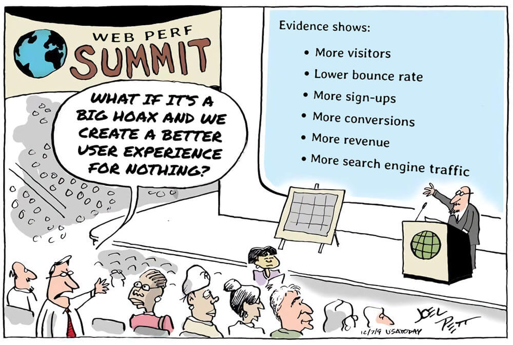

13 Jul 2020
With Covid-19, Microsoft bragged about Teams user acquisition being “2 years of digital transformation in 2 months”. Well, for fashion, it is rather an opportunity to catch up with 10 years of e-commerce being behind with other industries. But the exploration of this potential is still shy; a lot has happened with social media for customer acquisition, but little has been achieved when it comes to online products [products being websites--not clothes]. This blog is dedicated to this fun quest.
A lot has happened in the past few months. We are in the middle of a pandemic that is shutting down retail stores and making people turn more and faster to e-commerce websites to do their shopping online. Even before Covid-19 the e-commerce sector was predicted to steadily grow - as the world’s population is getting easy access to the internet - and due to the pandemic this growth is accelerating.
Companies helping you buy and sell clothes online like Shopify and Stripe are valued billions of $$$ and brands big and small are aware how important their online presence is. Also we have witnessed a lot of fast David vs. Goliath examples:
• Millennial favourite Off-White’s [founded in 2012] Virgil Abloh took over menswear creative direction at Louis Vuitton [founded 1854].
• SSENSE which has a 100 developers employed in Montreal, Canada who solely work on their website utilising the latest javascript frameworks [Vue.js] impacting site-speed and perceived loading time is a favourite fashion destination for all the cool kids who have cash to burn. They made the decision to heavily invest in their tech -- and this has payed off.
• “New” in the game [not that new] marketplaces like Farfetch and Tmall carving out a big share of sales while fashion retailers relying on traditional wholesale suffering sales year on year.
And people like your old classmate from primary school are able to cash in as influencers just by posing in very short jeans shorts with some branded ice-tea that they are trying to sell to you, as we spend more time scrolling through ads on social media.
But this is just the beginning, with China leading the way with e-commerce being barely at 25% [as pointed out by Benedict Evans], ahead of UK and South Korea; then between 5% and 15% for USA, France, Japan and Germany; then not even 5% for Russia, Brazil, India and the rest of the world.
Luxury fashion brands have been historically behind with digital innovation.
• Celine launched their first e-commerce site in 2017 [yep. 3 years!!! ago]. Before that they just had the lookbooks available to look at online. A habit that took a long time to shake for old french fashion houses.
• Chanel still doesn’t sell it’s ready-to-wear and accessories online. They only sell make-up. They are one of the only big giants still without a proper e-commerce website. They have lookbooks and product pages with prices [for certain expensive items you need to even request the price] but the ADD TO BAG button is missing everywhere.
• Givenchy didn’t have an e-commerce website until 2013 - when they outsourced it to then Net-A-Porter [now YOOX] to build it for them and where the Net-A-Porter credits showed up in Givenchy’s footer. YIKES. This is from a historic french fashion house owned by LVMH, a company that surely should have hired more people in their e-commerce team and launched their own website.
It’s 2020. Many of these big names have been slow and very late to the game. Now people want to avoid physical contact and want to order everything online.
The 15% year-on-year growth in e-commerce with a 1.2B consumer basis is just the beginning [2018-2022 Statista data]. And at the same time, retail stores are disappearing [according to Shopify, “last year, more than 1,875 fashion retailers shut down and this year, projections reported by WWD place the number at just under 10,000...” and it was estimated before Covid-19!]. However all fashion houses slowly started to understand what is understood as prehistoric knowledge in the tech industry: that site-speed affects conversion rate, that good UX will most likely enable your customer to purchase that $30k bag, and that perhaps it’s time to switch to a more suitable platform and refactor the codebase in order to load those product pages faster... otherwise, either they risk losing sales to a marketplace, where customers shop from the same inventory but on a much better functioning website, or, let’s face it, to lose their customers at all against some tailored-for-instagram newcomers.
What is even dumber, is the comparative costs of e-commerce vs. retail stores: Nike’s venue on the Champs-Élysées costs €613M, a lease on the 5th Avenue is $2,250/squarefoot, right behind $2,2745 on Hong Kong’s Causeway Bay. As prestigious as these stores seem at their expensive locations, they represent a few points in the brands’ revenue structure, probably only a decimal. While brands are spending money on a lease and fancy painting, they keep their e-commerce team headcount to the bare minimum: interns managing the platform even if it already brings 10-50% of the revenue stream... or during a pandemic shutdown this revenue jumps to 100%. And if you say such venues are important in terms of brand image and marketing, well... what would you say about a well-functioning website? Why is there such a discrepancy in efforts between retail and e-commerce, if it’s not by ignorance?

This post is an introduction, it is not meant to dig in a specific topic. But as you are here already, let me tell you my first principle:
Forget fancy UI.
Creative web designs are becoming less common as the web is moving closer to a shared design language and best practices are being freely shared by the amazing web dev community: which one hand makes websites look more homogeneous while on the other hand enforces more good UX. The latest design trend is to have no design at all, as this great article points out: GOOD UX = BORING UI.
One big reason behind this principle is that: You are not the user.
According to this research computer literacy is very low amongst the population “across 33 rich countries, only 5% of the population has high computer-related abilities, and only a third of people can complete medium-complexity tasks.” While it may be easy for you to buy your weekly groceries online, a lot of other people have trouble using a computer, the internet and technology in general. Which is totally fine. We just need to make sure we make shopping easy for everyone on the web.
Resources, articles and how-tos on webdev and e-commerce can be found in abundance online since the webdev community shares freely best practices, code snippets and learnings from previous projects while working at Big Tech companies or startups however when you look at the fashion industry and it’s digital sector, not much has been said or shared. fashionweb.io is a place to stay up-to-date on all things digital in the fashion industry: creative or not-so-creative web designs, good and bad UX, new tech to use to achieve fast site-speed, best and worst practices or just check out some new fashion websites for inspiration for those who want to launch their new e-commerce site in fashion.
Hello world!